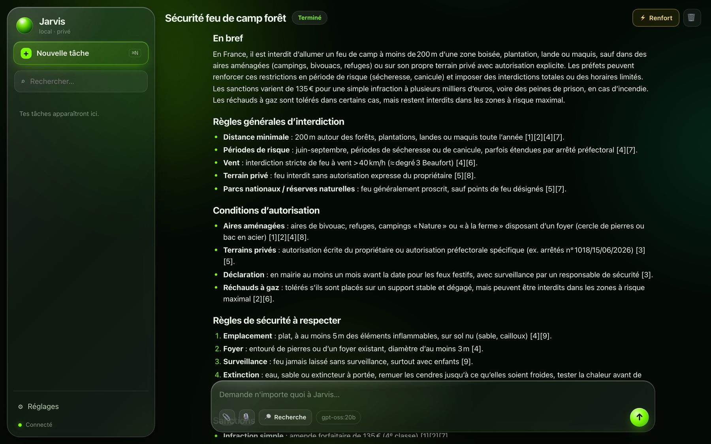

Jarvis.
L’IA, côté Mac.
Explorer ce qu’un agent personnel peut faire avec des modèles qui tournent sur mon propre ordinateur. Jarvis associe Ollama et MLX à une interface inspirée du liquid glass.
- Intention
- Un assistant personnel local
- Environnement
- MacBook Air M5 · Ollama / MLX
- Approche
- Expérimentation · Licence MIT


Pourquoi ce projet
Garder la main.
Garder la main.
Apprendre en créant.
Jarvis me permet d’explorer l’IA locale, la conception d’interfaces et l’automatisation de tâches. L’objectif est de rendre ces outils plus accessibles dans un environnement personnel.
Mon fil conducteur : une demande formulée simplement, des actions compréhensibles et une expérience cohérente sur Mac.
Ce que j’explore
Du modèle
Du modèle
à l’usage.
- Exécution de modèles sur Apple Silicon avec MLX et Ollama.
- Interaction avec des outils et des fichiers dans un agent personnel.
- Interface en verre translucide, lisible et adaptée au Mac.
- Conception et développement assistés par l’IA.
Local, avec un périmètre clair. Les modèles peuvent s’exécuter sur le Mac sans abonnement à une API payante. Les fonctions web utilisent Internet et le dépôt prévoit un renfort en ligne facultatif. Le projet ne promet donc pas que tous les usages restent hors ligne. Les conditions d’installation et les limites actuelles sont décrites dans le dépôt.